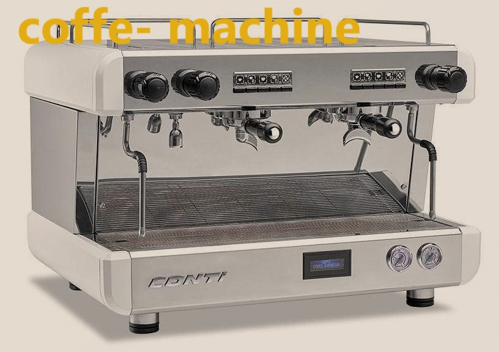
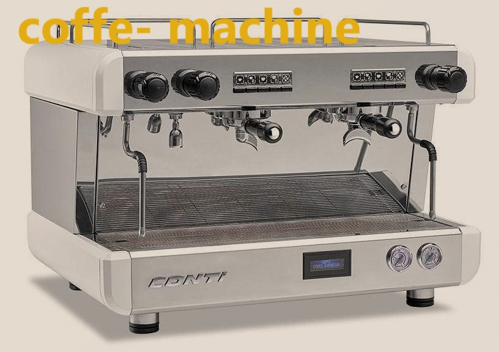
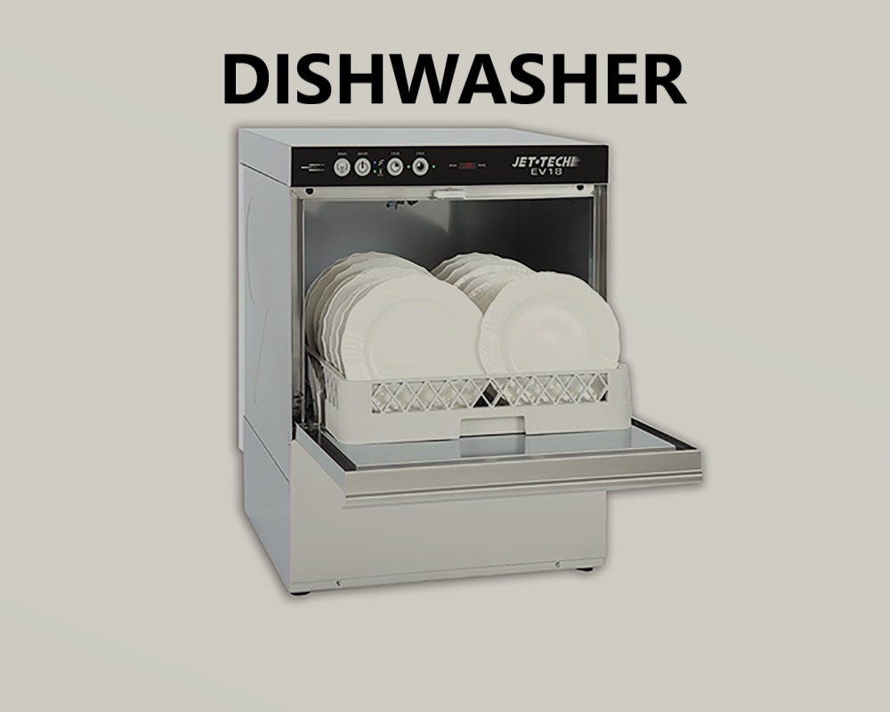
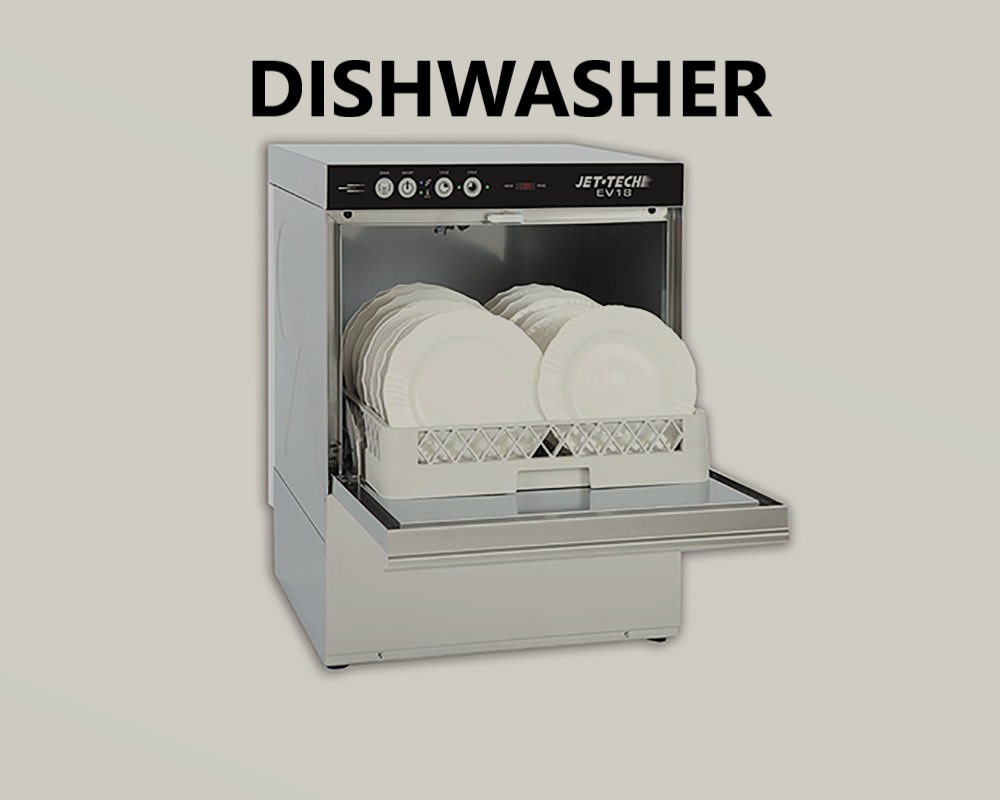
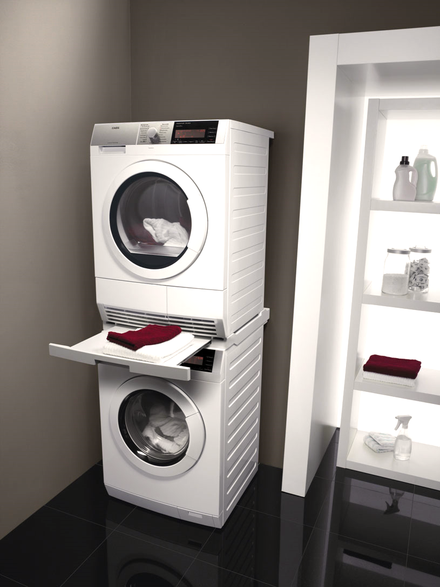
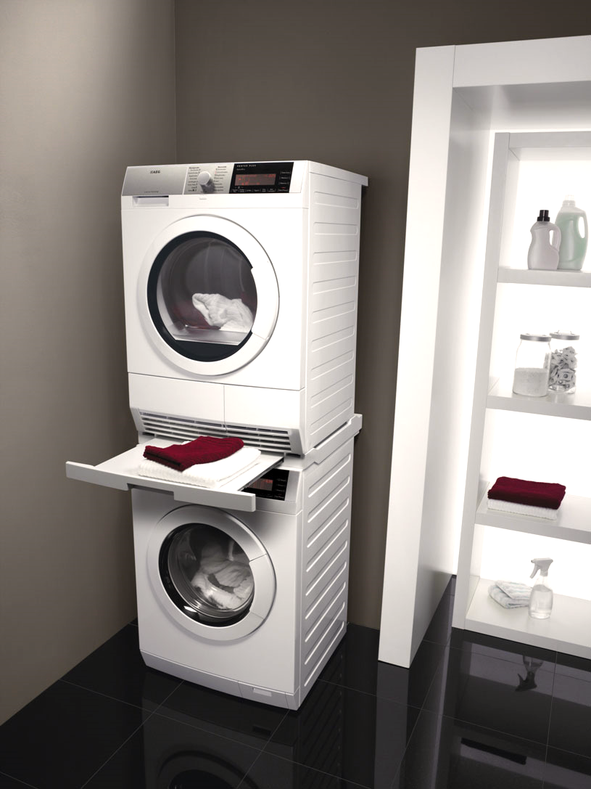
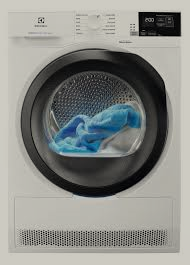
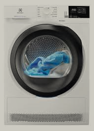

 


 

 


If you find yourself in a situation where your washing machine is not draining or spinning.
It can be quite frustrating. However, it's important to stay calm and tackle the issue step by step. There are several possible reasons why your washer may not be draining or spinning, and below we will discuss some common troubleshooting techniques to help you resolve the problem.
Washing Machine stopped full of water.Firstly, check if there is a clog in the drain hose or pump. Detach the hose from the machine and ensure it is clear of any debris. You can also check the pump for obstructions. If you notice any clogs, remove them carefully and reattach the hose securely.
Secondly, check the washer's lid switch. Many washers have a safety mechanism that prevents the machine from draining or spinning if the lid is open. Make sure the lid is closed properly and examine the switch to see if it is functioning correctly. If necessary, replace the lid switch to restore normal operation.
Another possibility is a faulty motor coupler.
This component connects the motor to the transmission and can become worn out over time.
If the motor coupler is broken or damaged, it will prevent the washer from draining or spinning.
In this case, you will need to replace the motor coupler to restore proper functionality.
It is also important to check the washer's drain pump for any issues.
The drain pump is responsible for removing water from the machine, and if it is malfunctioning,
the washer may not drain properly. Make sure the pump is clean and free from any debris or foreign objects.
If the pump is damaged, it will need to be replaced.
In some cases, the problem may not be mechanical but rather related to the control board or timer. A malfunctioning control board or timer can disrupt the normal cycle settings and prevent the washer from draining or spinning. If you suspect an issue with either of these components, consult a professional technician in Vancouver to diagnose and repair the problem.
Overall, when faced with a that is not draining or spinning, it is important to approach the troubleshooting process systematically. Check for clogs in the drain hose or pump, inspect the lid switch, examine the motor coupler, and ensure the drain pump is functioning properly. If all else fails, consider seeking professional help to resolve the issue and get your washing machine back to its optimal performance.